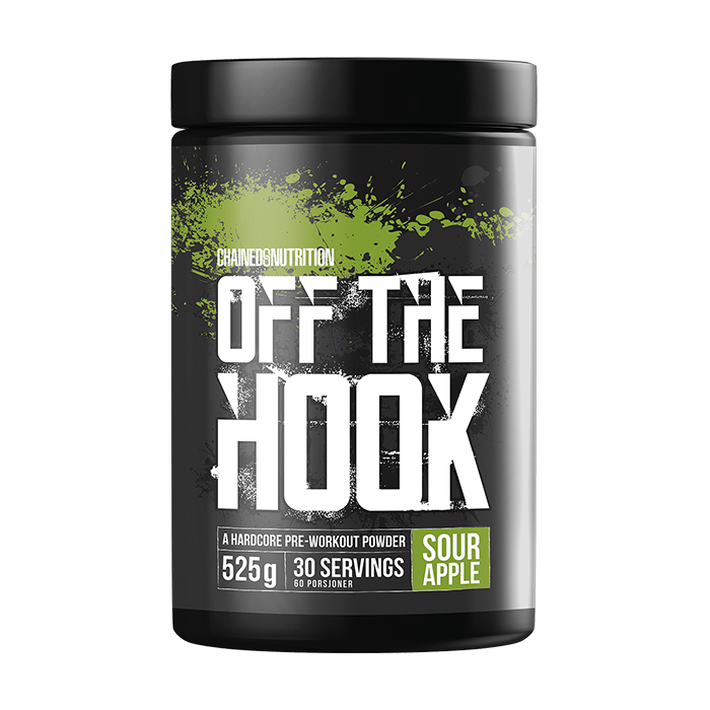

Chained Nutrition Off the Hook, 525 g
Off The Hook harmoniserar med den kompromisslösa och vågade approach som Chained Nutrition gjort sig känt för. Men notera att det inte är en PWO för den oinvigde! Off The Hook är framtagen i samråd med hårt tränande och erfarna atleter och har därför en komposition som passar nämnda målgrupp.
Let’s get Off the Hook!
Doseringsanvisning: Blanda en skopa (17 g) med cirka 250 ml vatten. Drick före träning.
Antal serveringar per burk: 30
Information: Detta är ett kosttillskott och bör ej användas som ett alternativ till en varierad kost. Överskrid ej det rekommenderade dagliga intaget. Förvaras utom räckhåll för små barn. Hög koffeinhalt (350 mg/dosering). Rekommenderas ej för barn, gravida eller ammande kvinnor.